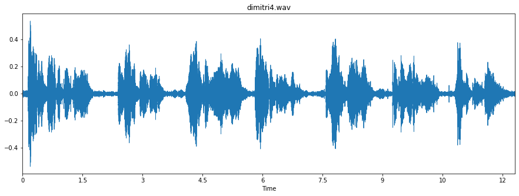

Laboratório 7:
Codificação de Voz
Neste laboratório, a equipe utilizou um conjunto de áudios gravados para realizar análises de processamento digital de sinais em espectros de voz. No fim da página, é disponibilizado o Jupyter Notebook utilizado para a realização deste experimento.
1. Gravação dos arquivos de áudio
Inicialmente, forneceu-se um arquivo de áudio com a declamação de um dos versos da canção Vambora (Adriana Calcanhoto) em forma de poesia para que a equipe pudesse se basear. Posteriormente, realizou-se a captura de áudio utilizando o software Audacity, por cada um dos integrantes do grupo, repetindo a poesia declamada. Essas foram as gravações:
Áudio fornecido
Dimitri
Matheus
William
2. Importação dos arquivos de áudio
Nessa etapa os arquivos gravados foram importados como vetores utilizando a biblioteca Librosa, bem como sua respectiva taxa de amostragem. A seguir são apresentados os plots dos sinais de áudio no tempo para cada uma das gravações.

Para realizar as anílses que se seguirão neste documento, a equipe realizou uma separação em cada um dos áudios para que apenas a primeira estrofe do poema fosse selecionada. Abaixo, seguem-se os plots no domínio do tempo dos sinais separados como descrito.

3. Energia dos arquivos de áudio
Assim como realizado no laboratório anterior, 6, a equipe determinou o contorno de energia dos sinais separados em decibéis (dB) em função dos segmentos, verificado nas figuras a seguir:
4. Separação sonora e surda
Nesta etapa, a equipe realizou a separação sonora/surda da primeira estrofe de cada
áudio exibido no início deste documento. Ao mesmo tempo, realizaram-se os cálculos dos
parâmetros LPC, separação U/UV e Espectro + Envoltória LPC. Esses parâmetros
serão exibidos mais adiante em uma tabela que os comparará para cada áudio utilizado.
Segmentos sonoros:

Segmentos surdos:
6. Cálculo dos Parâmetros LPC, separação U/UV e Espectro + Envoltória LPC
Verifica-se, abaixo, um atabela que compara os parâmetros mencionados em relação a cada áudio
utilizado nesta atividade.
O áudio disponibilizado apresentou os parâmetros VAD e U/UV bem abaixo dos áudios gravados pela
equipe.
| Limiar VAD | Limiar U/UV | Sonoros | Surdos | |
|---|---|---|---|---|
| Fornecido | 7.528 | 10.228 | 28 | 8 |
| Dimitri | 19.7811 | 22.481 | 9 | 7 |
| Matheus | 33.625 | 36.325 | 10 | 7 |
| William | 82.334 | 85.039 | 9 | 3 |
7. Trajetória da f0 com a ultilização do algoritmo pYIN
Abaixo, verificam-se os plots que mostram a trajetória de f0 com a utilização do algoritmo pYIN para cada áudio utilizado.

8. Trajetória do pitch
Assim como antes, abaixo, verificam-se os plots que mostram a trajetória do pitch para cada áudio utilizado.
9. Estimativa da frenquência f0 fundamental
Abaixo, um espectrograma para cada áudio utilizado mostrando a estimativa da frequência f0 fundamental.
Anexo: Jupyter Notebook
Abaixo, exibe-se o Jupyter elaborado pela equipe. Caso tenha problemas para carregá-lo, clique aqui .